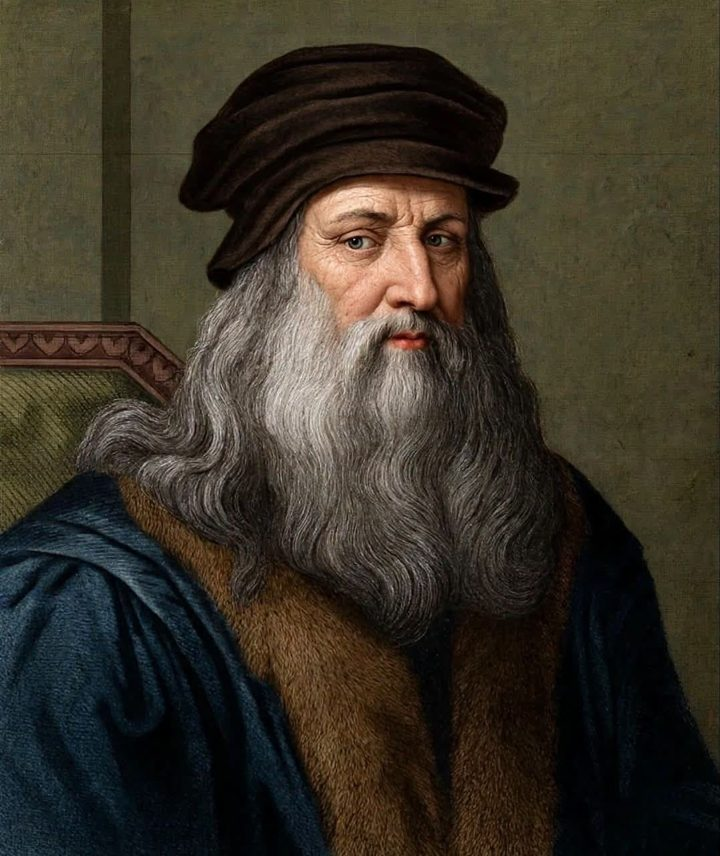

- Born
- 15 April 1452, Vinci, Italy
- Died
- 2 May 1519, Amboise, France
- Age at death
- 67 years
- Country
- Italy
Italian RenaissanceSanguine red chalk, the medium of his drawings, on vellum tones. Interlocking Roman rings echo the carved ornament of classical Italy.
Painter, engineer and anatomist
- Painted the Mona Lisa and The Last Supper, two of the most reproduced images in Western art.
- Drew the Vitruvian Man around 1490, a study of the proportions of the human body.
- Filled notebooks with designs for flying machines, bridges and war machines, most of which were never built in his lifetime.
Key dates
- 1452Born in Vinci, near Florence.
- c.1482Moves to Milan to work for its ruler, Ludovico Sforza.
- 1495–98Paints The Last Supper for a convent in Milan.
- c.1503Begins the Mona Lisa.
- 1516Moves to France at the invitation of King Francis I.
- 1519Dies at Amboise.
Why they endure. Curiosity across disciplines. He is the standard example of someone who learned a subject by drawing it.
Terms to know